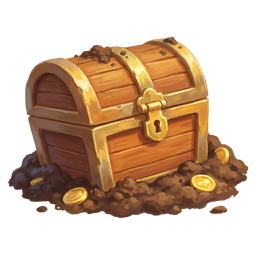
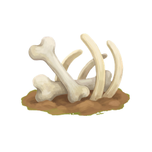

device:
iPhone
iPad P
iPad L
Desktop
tunnel.html — tier-1 fox tunnel
Garden tunnels
rotate the tiles so the animals can get out to play and back home safely
🔊
🏠 above
Close ×
⏸ QUICK! Tap a tile to fix…
Building the tunnels…


Ready to dig?
Rotate the soil tiles so the animals can find their way out to play — and home again safely.
Ready!
Hooray!
The fox got home!
Continue
Try again